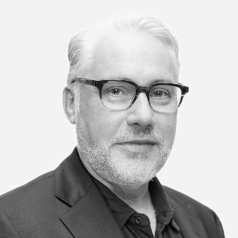
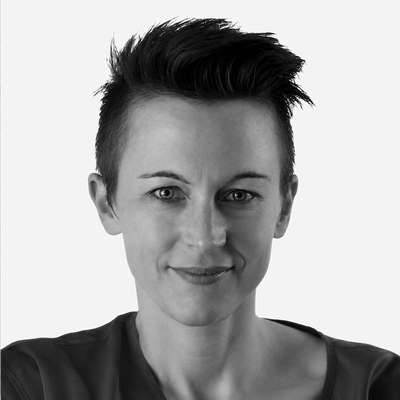
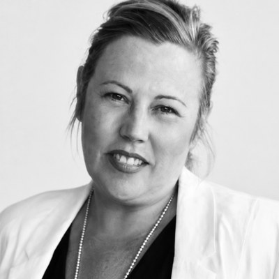
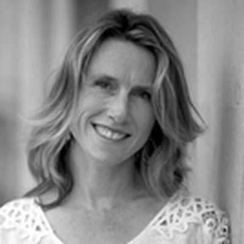
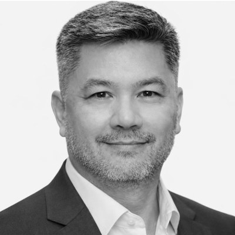
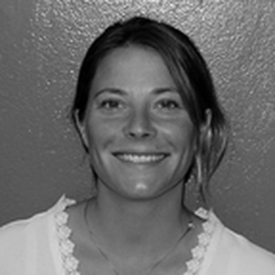
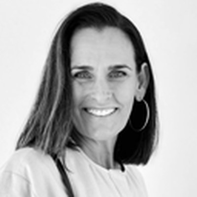
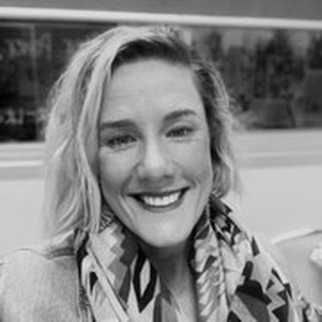
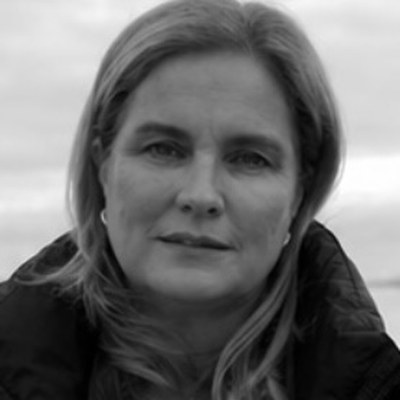
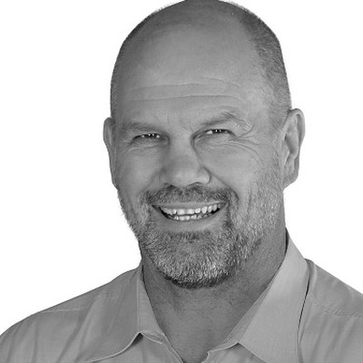

The ASBB was established in 2018 by the Neuropathology Department at RPA Hospital Sydney in partnership with the Brain and Mind Centre at the University of Sydney, and the Concussion Legacy Foundation in the USA.
Our Mission
Our mission is to use expert diagnostic neuropathology, coupled with research, to understand chronic traumatic encephalopathy (CTE) and other brain pathology that is associated with repetitive head injury in sport and elsewhere. We empower families and loved ones by providing accurate diagnoses, and we use donor tissue for biomedical research into CTE and other brain disorders.
Our Vision
Our vision is for Australia to be a nation that recognises and acts on CTE and other brain disorders associated with repetitive head injury. We will provide help and advocacy for those individuals and families affected. We are working to achieve our vision through:
- Educating the public and medical practitioners about CTE
- Connecting affected families to create a support network
- Facilitating world-class research on CTE through our brain donor program
Our Team
The clinicians and scientists behind the Australian Sports Brain Bank.

Associate Professor Michael Buckland
A senior neuropathologist and Head of the Department of Neuropathology at Royal Prince Alfred Hospital, Head of the Molecular Neuropathology Program at the Brain & Mind Centre, University of Sydney, and Co-Director of the Multiple Sclerosis Research Australia Brain Bank.

Associate Professor Linda Iles
Forensic pathologist at the Victorian Institute of Forensic Medicine (VIFM), where she has been Head of forensic pathology services for the past ten years. She has an interest in forensic neuropathology and post-mortem radiological imaging in forensic pathology practice.

Associate Professor Catherine Suter
Responsible for the direction and scientific integrity of ASBB tissue research. A world-recognised expert on environmental influence on disease risk, particularly epigenetics, she brings this expertise to the study of CTE to understand the disease and develop ways to diagnose it during life.

Dr Jennifer Cropley
A senior research scientist expert in the analysis of large datasets. She brings her experience to the ASBB to spearhead population-based studies on the long-term outcomes of concussion and repeated head injuries in contact sports.

Professor Alan Pearce
A neurophysiologist who has spent 20 years researching sports-related concussion. Using electrophysiological techniques, particularly transcranial magnetic stimulation, his research centres on brain physiology to quantify cognitive and motor impairments in the acute phase post-concussion and the chronic manifestations of repeated concussions.

Monica Clarke (RN)
A clinical nurse consultant with a background in organ transplant coordination. With over 15 years of clinical nursing experience, she is committed to improving future outcomes through ongoing research, while providing compassionate advocacy, support and education for individuals and families affected by CTE.
Our Ambassadors
Advocates with lived experience, helping raise awareness of CTE.

Amanda Green
Wife of the late NRL player and coach Paul Green, Amanda is passionate about raising awareness of CTE and its symptoms so no one else suffers in silence. With two young sports-loving children, she understands firsthand the importance of the ASBB's research for the next generation of athletes.

Renee Tuck
As sister of the late AFL player Shane Tuck, Renee has lived experience of how CTE can impact families. She generously donates her time to the ASBB to help educate and raise awareness, and feels passionately about supporting other families going through loss due to this disease.

Anita Frawley
Wife of the late AFL player and coach Danny Frawley, Anita was determined to find answers to her husband's mental health struggles. She is passionate about prioritising care for retired athletes, and protecting and supporting current athletes during their careers.

Peter FitzSimons
Former Wallaby Peter FitzSimons is a vocal advocate for player safety and stricter concussion management in Australian contact sports. His stance has generated widespread debate, particularly regarding the long-term impacts of repeated head impacts and the risk of CTE. He advocates for drastic structural changes to make contact sports safer, including the total banning of the kick-off in rugby league to avoid initial, high-impact collisions.